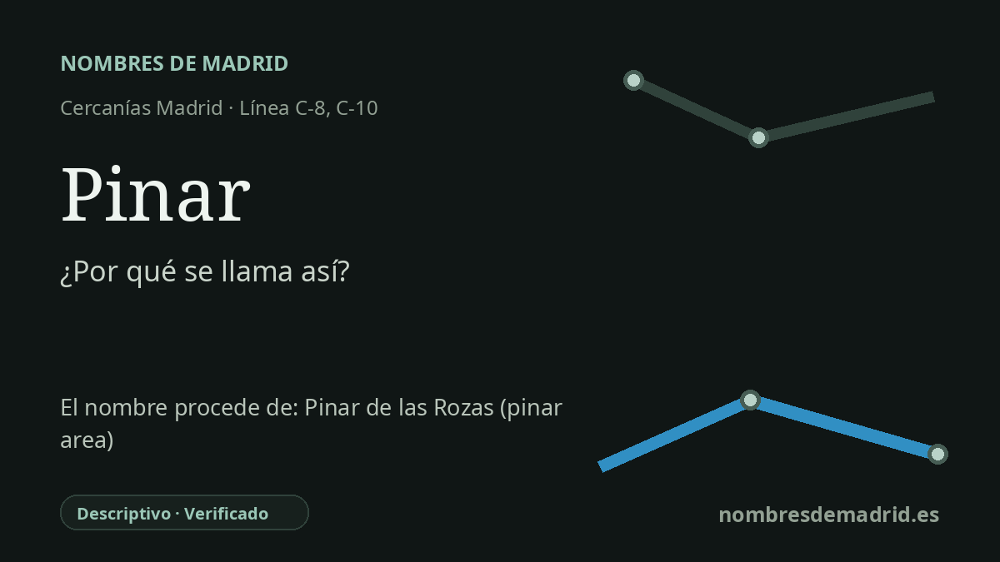

Publicado el · Investigación de Nombres de Madrid · Cómo verificamos cada origen · 9 fuentes consultadas
Respuesta rápida
Pinar toma su nombre del entorno arbolado de pinos de Las Rozas. El nombre ferroviario también identifica un nudo importante donde confluyen la antigua ruta del Norte, el acceso a Chamartín y enlaces posteriores de Cercanías.
La historia del nombre
El nombre Pinar es sencillo, pero muy local. Renfe describe Pinar de Las Rozas como la estación conocida comúnmente como Pinar e indica que su nombre se debe al entorno natural cercano, junto a la A-6 y alejado del casco urbano tradicional de Las Rozas. En español, pinar significa un lugar poblado de pinos, de modo que el nombre de la estación es paisajístico y no una dedicatoria a una persona.
Esa referencia al paisaje apunta al área del Pinar o El Pinar de Las Rozas. Descripciones públicas de la cercana Dehesa de Navalcarbón destacan su arbolado de pinos y el uso local de la expresión Pinar de Las Rozas para un espacio marcado por esos árboles. El nombre de la estación funciona, por tanto, como etiqueta geográfica práctica y como recuerdo del carácter arbolado de esta parte del municipio.
La historia ferroviaria es más antigua y más compleja que la de un simple apeadero suburbano. El tramo Madrid-El Escorial del corredor ferroviario del Norte se abrió en 1861, pero Pinar no figuraba entre las estaciones de viajeros originales de esa ruta. El mapa histórico ferroviario del Consorcio Regional de Transportes recoge en 1961 una 'Estación de Pinar de las Rozas' como estación de apoyo al ramal que comunicaba la línea Norte-Villalba con la futura estación de Chamartín, y otras cronologías ferroviarias sitúan en los años sesenta la apertura del enlace Pinar-Chamartín.
Ese papel de nudo es esencial para entender el lugar. Pinar se encuentra donde se relacionan el antiguo corredor Príncipe Pío-Villalba, la ruta hacia Chamartín y los movimientos posteriores de Cercanías. La finalización en 1989 del llamado 'Triángulo de Pinar' permitió todos los movimientos principales entre Príncipe Pío-Villalba, Villalba-Chamartín y Príncipe Pío-Chamartín; es una fecha clave para el enlace, pero no la más segura para presentar como origen de la estación o de su nombre.
La explicación mejor respaldada es, por tanto, descriptiva: Pinar toma su nombre del paisaje de pinos y del área local de Pinar de Las Rozas. No aparece una teoría competidora sólida de tipo personal o conmemorativo. El matiz pendiente es cronológico: el papel público de la estación dentro de Cercanías cambió con el tiempo, mientras que el topónimo ferroviario parece estar en uso al menos desde los años sesenta.